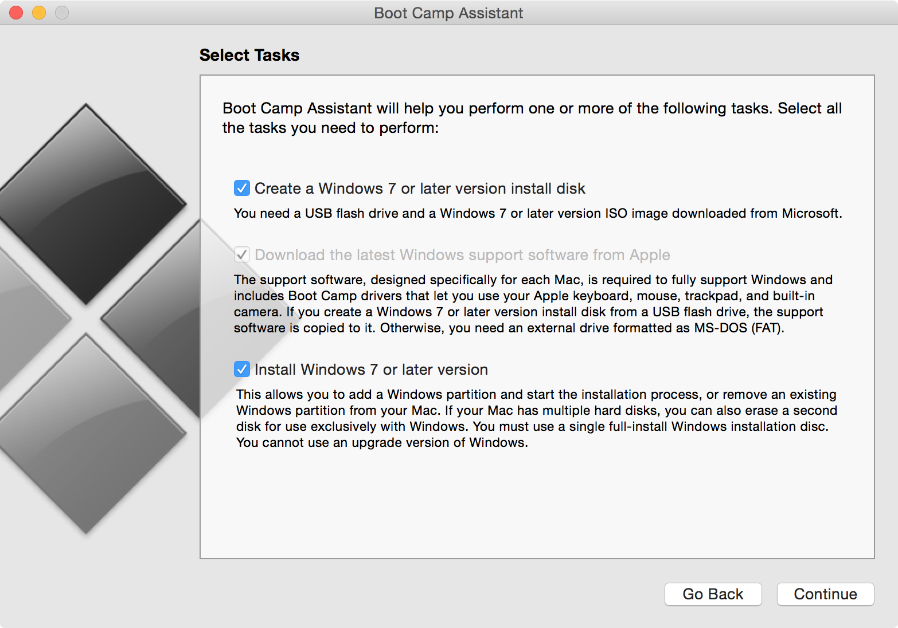
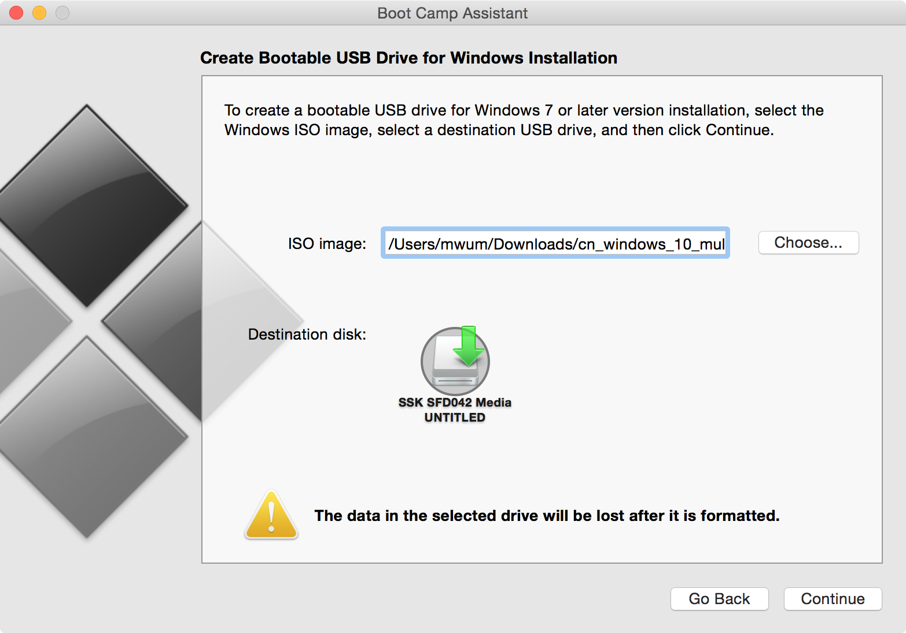
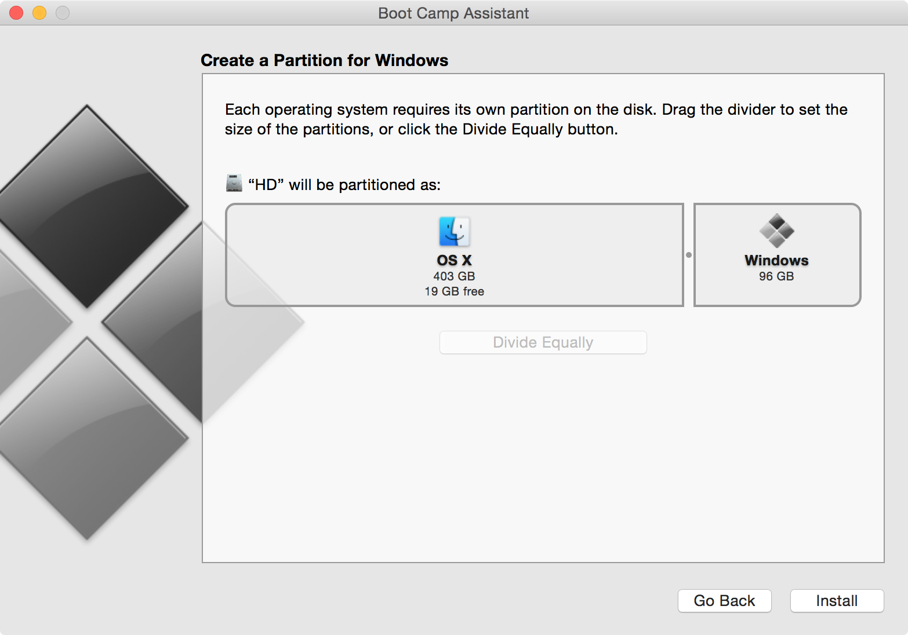
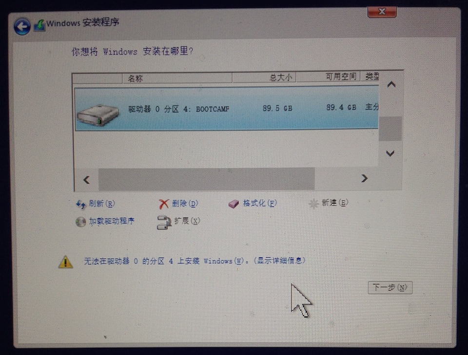
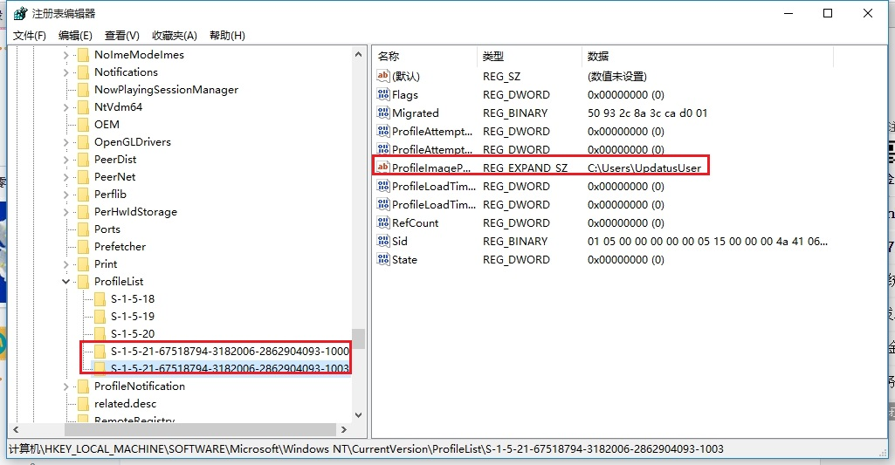

Mac 电脑使用 BootCamp 来安装 Windows 10
参考自苹果的技术支持《如何使用 Boot Camp 来安装 Windows》
更具体可查看《Boot Camp 帮助》
Boot Camp 6.0 已经完美支持 Windows 10
我们能达到的效果：
- 能够以原生速度运行 Windows
- 启动的时候可在 Windows 和 OS X 间切换
- 安装和卸载非常容易，不会对原有系统产生影响，不会对现有文件产生影响
准备：
-
基于 Intel 的 Mac
-
64 位版本的 Windows 系统镜像，例如
Windows 10 (Multiple Editions) (x64) - DVD (Chinese-Simplified)文件名 cn_windows_10_multiple_editions_x64_dvd_6848463.iso SHA1 C71D49A6144772F352806201EF564951BE55EDD5 文件大小 4.01GB 发布时间 2015-07-29 下载地址 ed2k://|file|cn_windows_10_multiple_editions_x64_dvd_6848463.iso|4303300608|94FD861E82458005A9CA8E617379856A|/也可去 http://msdn.itellyou.cn/ 下载
-
可以删除的 8 GB 或更大容量的 USB2 U盘
-
足够的剩余硬盘空间，至少为 30 GB
-
备份好 Mac 电脑上的所有资料
具体安装过程
「Boot Camp 助理」只为 Windows 创建一个分区，而不会抹掉现有的 OS X 宗卷。重要信息：如需安装 Windows，请勿使用「磁盘工具」对硬盘驱动器进行分区。务必使用 Boot Camp 助理。
——苹果官方
一、使用 BootCamp 制作启动U盘和获取 Windows 驱动
-
打开 “Boot Camp Assistant” 软件，点击 “Continue”
-
将三个选项都选上，点击 “Continue”，如下图所示
 -
选取需要安装的 Windows 镜像，在 “Destination disk” 中选择要制作成启动盘的 U 盘，千万不要选错了，不然被格式化就麻烦了，最后点击 “Continue”, 如下图所示
 -
跳出一个小对话框，提醒你会删除 U 盘中的所有数据，点击 “Continue”
-
漫长的等待…
Boot Camp Assistant 会自动制作启动盘和下载 Windows 驱动
不要关闭 BootCamp 软件，继续第二部分的安装
二、使用 BootCamp 创建用于 Windows 的分区
第一部分很长时间的等待过后，进入分区页面，给 Windows 分出适当的大小，点击 “Install”, 如下图所示

分区完成之后，会自动重启进入 Windows 安装
进入第三部分的安装
三、安装 Windows
进入如下步骤的时候，选择 BOOTCAMP 分区，将其格式化，然后点击「下一步」

稍后系统自动重启，进入 Windows 系统的安装，安装完成之后，会自动重启进入 Windows
最后进行第四部分的安装
四、安装驱动
进入 Windows 之后，再打开 U 盘目录下的 “BootCamp” 目录，运行 “setup.ext” 文件，进行驱动程序的安装
五、如何选择使用哪个系统
-
选择默认启动的操作系统
-
在 Windows 下
单击系统托盘中的「BootCamp 图标」，然后选取「BootCamp 控制面板」，按情况设置即可 -
在 OS X 下
依次打开 “System Preferences” -> “Startup Disk”, 按情况设置即可
-
-
临时改变需要启动的操作系统，但是不会改变默认启动
在电脑启动的时候按住 “Option” 键，会出现启动选择页面
遇到的问题
安装 KB3074683 更新总是失败
系统为 64 位专业版
安装此更新总是失败，导致每次开机都会重启 4-5 次
解决办法来自 《win10的KB3074683 更新失败 ，回滚。正式64位专业版。》
以下是摘录：
-
按下 “Win + R” 键打开「运行」，输入 “regedit” 然后回车打开注册表
-
依次进入
HKEY_LOCAL_MACHINE\SOFTWARE\Microsoft\Windows NT\CurrentVersion\ProfileList目录
「ProfileList 目录」里面有 “S-1-5-21-1927424506-2982433050-3234380617-1001” 和 “S-1-5-21-1927424506-2982433050-3234380617-1002” 两个目录（每台电脑目录名称不一样，下图是我电脑中的名称）。其中有一个链接到 “UpdatusUser”, 另一个链接到你的本地账户（或个人Windows账户）
删除那个链接到 “UpdatusUser” 的目录（即上面图片中选中的目录），另一个目录保留
-
重新安装 KB3074683 更新